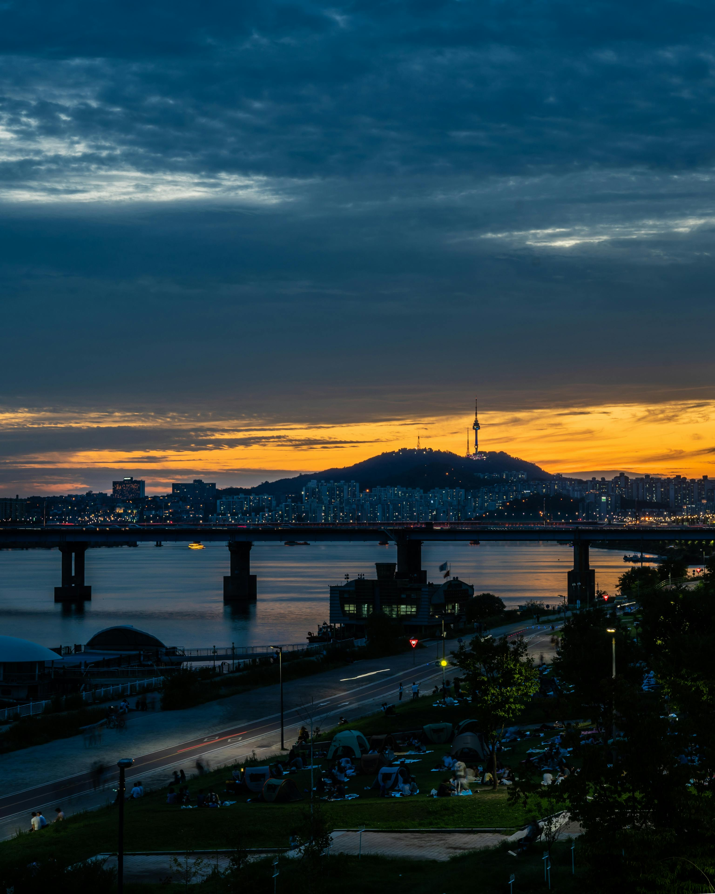
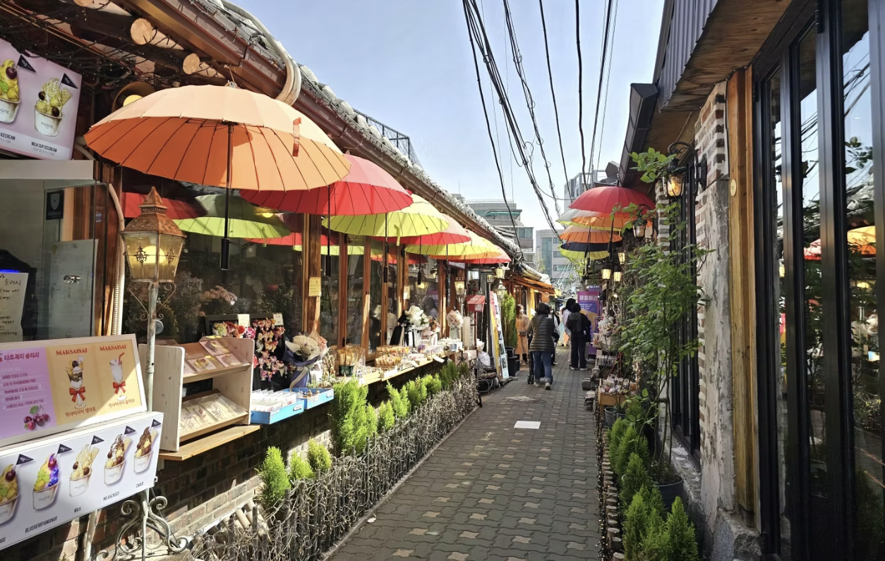
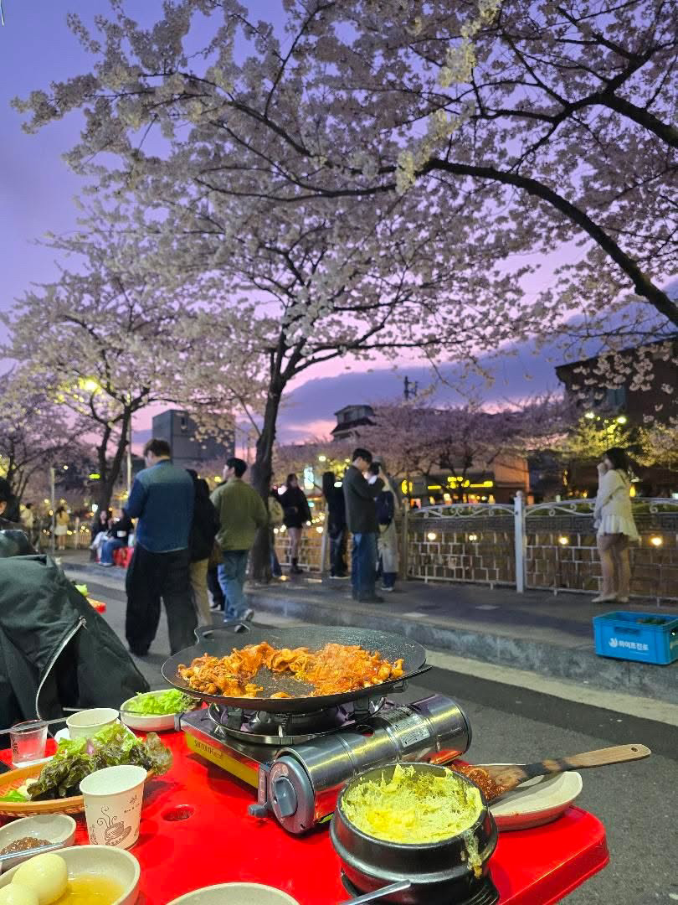
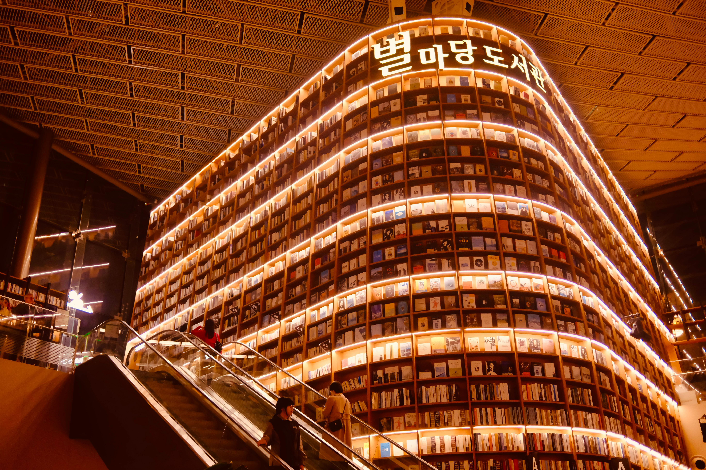

Small Tips
- Seoul has four distinct seasons!
- Known for its delicious food, vibrant nightlife
- Efficient public transportation system
- Spring and fall are especially recommended seasons to visit, but personally, I also think Seoul is beautiful during snowy winter days
Han River

The Han River is one of the most iconic places in Seoul, loved by both locals and visitors.
Stretching across the city, it offers beautiful views, relaxing parks, and a lively atmosphere
throughout the day and night. People often visit the Han River to enjoy picnics, bike rides,
late-night walks, and outdoor gatherings with friends.
Enjoy a variety of Korean food truck snacks while experiencing Seoul's unique atmosphere!!
For more information, visit the Seoul Metropolitan Government
Ikseon dong

Ikseondong is a place in Seoul where visitors can experience traditional Korean culture through the
harmony of traditional hanok houses, modern cafes, restaurants, and small shops.
The many narrow alleyways are filled with unique stores, various decorations, and cozy outdoor
spaces that create a special atmosphere. Visitors can experience both Korean culture and modern city
vibes at the same time while exploring the area. Ikseondong is also loved by both locals and
tourists for its photogenic streets, trendy cafes, and relaxing atmosphere.
Recommended Places & Menu:
- Cheongsudang Bakery
- Strawberry Compote Souffle Castella ⭐️⭐️⭐️⭐️⭐️ - Cafe Highwaist
- Teddy Scone ⭐️⭐️⭐️⭐️⭐️
- Scotch Latte ⭐️⭐️⭐️⭐️ -
IK seon atteut
- Pork Ssam with Doenjang Sauce ⭐️⭐️⭐️⭐️⭐️
- Chadolbagi & Chive Spicy Mixed Noodles ⭐️⭐️⭐️⭐️
For more information, visit the KoreaToDo
Seongbukcheon Stream

Seongbukcheon Stream is one of the most popular streams in Seoul for walking, running, and biking.
Flowing through the center of the city, it offers a small escape into nature while still being
surrounded by lively urban streets.
During spring, cherry blossoms bloom beautifully along the
stream, and the area becomes especially famous for its outdoor dining culture, where people enjoy
food and late-night gatherings at tables set outside nearby restaurants.
Many locals and
visitors come to Seongbukcheon to enjoy the outdoor atmosphere and relaxing scenery. It is also a
great place to spend time with friends and experience the afternoon and nighttime vibes of Seoul.
For more information, visit the PLOY'S LITTLE ATLAS
Coex

COEX is one of Seoul’s most famous shopping and cultural complexes, located in the Gangnam area. The
space is filled with large shopping malls, restaurants, cafes, exhibition halls, and many other
attractions, making it a popular place that is always crowded with visitors.
One of the most famous spots inside COEX is the Starfield Library, known for its towering
bookshelves and modern interior design, making it a favorite photo spot for many. This place is also
well known for hosting various pop-up stores and special events. It is directly connected to public
transportation, making it very convenient and accessible.
Recommended Places & Menu:
- COEX Aquarium ⭐️⭐️⭐️⭐️⭐️
-
Icheon Garden
- Pork Soy Sauce Bulgogi With Rice⭐️⭐️⭐️⭐️
- Steak Dish Set With Rice ⭐️⭐️⭐️⭐️⭐️
- Kimchi Stew Dish Set With Rice ⭐️⭐️⭐️⭐️⭐️
For more information, visit the The Soul of Seoul
Sources
- Stunning Seoul cityscape featuring the Han River and skyline during sunset, highlighting urban tranquility., Ethan Brooke, . Source: pexels
- Life Platform Hangang, SEOUL METROPOLITAN GOVERNMENT. Source: Seoul Metropolitan Government
- A small alley in Ikseondong filled with colorful umbrella decorations, restaurants, cafes, and shops with a traditional hanok atmosphere., KoreaToDo, Used under fair use for educational purpose. Source: KoreaToDo
- People enjoying food outdoors under cherry blossom trees at night in Seoul., Personal photograph by Yubeen Choi, .
- CHASING CHERRY BLOSSOMS: A SPRING GUIDE TO SEONGBUKCHEON, Poly, . Source: PLOY'S LITTLE ATLAS
- An architectural marvel of a library in South Korea, featuring a vibrant, illuminated bookshelf and an escalator., Sreeraag Rajesh, . Source: pexels
- The 10 Best Things To Do At Starfield COEX Mall, Hallie Bradley, . Source: The Soul of Seoul
- Fonts: Abril Fatface and Nunito from Google Fonts